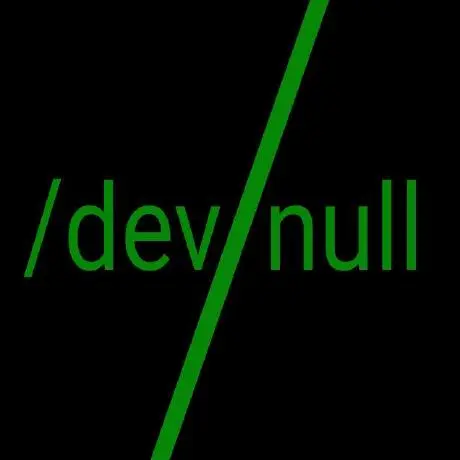

Nowadays, most terminals render output to a screen. The ones we are talking about here in particular, are the ones that are present in most unix like operating systems. They output to a screen, but usually , when one talks of say, a linux terminal, one doesn't talk of high end graphics. The point I am trying to make is that most terminals output plain text, and usually nothing more than plain text. (There are some exceptions , such as sixel, as well as kitty's protocols, etc)
Most unix like operating systems have a built in terminal even if they don't have graphical output. This terminal judges what kind of output to give depending on what devices are available. The "terminal" here is simply a program that can output text to a screen and take in input. By itself, it doesn't do much, but the best part about it is that we can write programs to tell it what to output and when to take in input. A classic example of such a program that takes advantage of the terminal is the classic "hello world" program, which is usually the first program that people write regardless of which programming language they are writing in. However, we can make it do a lot of other things as well.
Another example is say, a login screen, where the terminal asks the user for input (their username and password), passing those values back to the "login screen" program to check the credentials. Now there is a lot you can do just by outputting and manipulating text. For example, you can control the operating system itself. And this is actually a common use case. In fact the programs that allow you to control your operating system using a terminal are called "system shells".
Now , using the default "linux terminal" (or more accurately, the "linux console") might be a headache , because by default it provides only one (actually 12, from F1..F12) screens for you to do anything with. The workings of this "console" are more "internal" than regular programs, but for now we need something that can do the same things that the "console" can do, but without the restrictions of having to stay without a GUI (ever !) and having only one screen to stare at.
That is where a "Terminal Emulator" comes in. Simply put, it is a regular program that mimics the linux console. And just like the linux console, it is also, a "terminal" , in that it's job is also simply to display text and take in text input. And again, that is all you need.
Now, while the linux console starts with a "login screen" (called the "login shell", because it too, "controls" the operating system in a way), most terminal emulators default to more "standard" system shells.
What do I mean by "standard" ? Well for one, there's the POSIX standard, but some of these shells do not abide by it, but what I am talking about is the fact that these shells follow a similar structure. That is , they are a programming language with easy access to the operating system's internal functions.
The "shells" are programs that use the terminal (in this case, the terminal emulator) as a means to communicate with the user. Among the system shells in unix like OSes, bash is probably the most well known. Now I must clarify again, when you open a terminal emulator on your desktop, all the text you are seeing are being "rendered" by the terminal, but the "shell" is the one telling the terminal to render that so that it can , well, fulfill it's purpose.
Now before we move forward, we need to make sure that everybody is using "bash". for that, simply open a terminal and type "bash" into it. It should probably open bash, because it should be installed by default. If that doesn't work, just type "sh" and we'll do with that for now.
Now whichever shell you found yourself in, it follows some general rules. Try typing random things in it and press enter and see what happens. You might find out that some things seem to do something while others return an error.
Why is that ?
Well, like I said ,most shells follow some basic rules.
" " or ' ' or just \ )